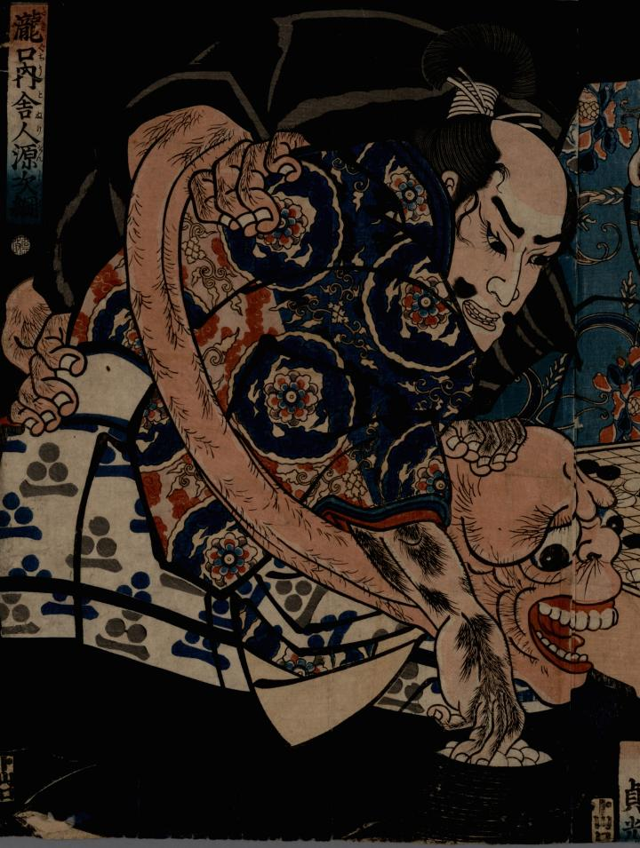

囲碁に熱中する渡辺綱に組み伏せられる化物。首が長く禿頭で、体毛が濃い。
著作者：一勇齋國芳／出典：親書誌：U426_nichibunken_0308：[酒田公時・碓井貞光・源次綱と妖怪]；サカタ キントキ ウスイ サダミツ ゲンジ ツナ ト ヨウカイ／日付：2014／資源識別子：U426_nichibunken_0308_0001_0000
Copyright (c)2010- International Research Center for Japanese Studies, Kyoto, Japan. All rights reserved.